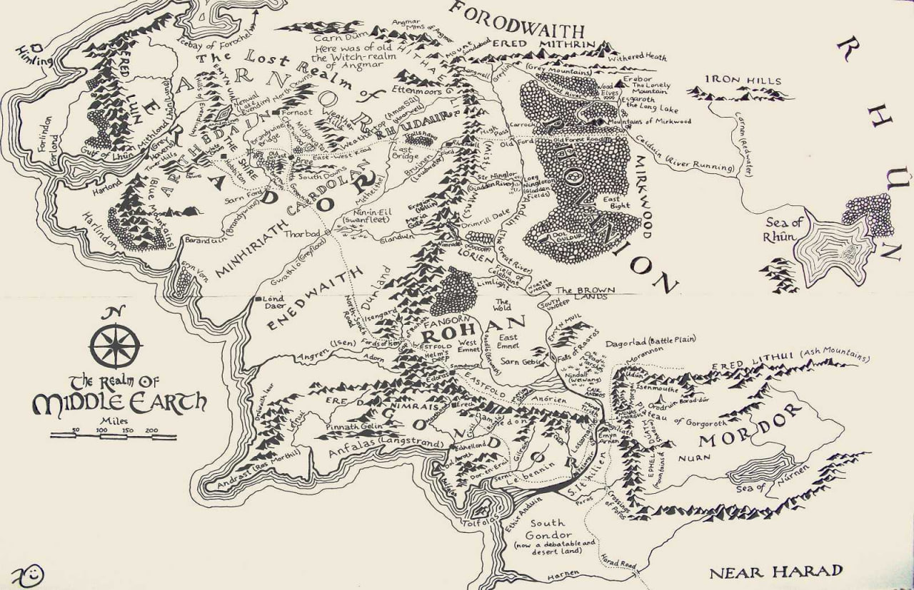
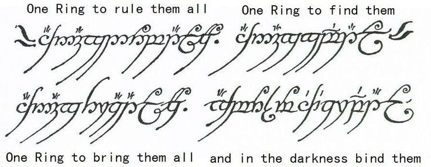

The Elvish Languages: Tolkien’s Masterpiece of Linguistic Art
When we think of fictional languages, none are more iconic or influential than the Elvish languages created by J.R.R. Tolkien for The Lord of the Rings. Tolkien wasn’t just a fantasy author — he was a philologist, a scholar of languages, and a lover of words. And for him, language came first.
“The invention of languages is the foundation. The ‘stories’ were made rather to provide a world for the languages than the reverse.”
— J.R.R. Tolkien
Tolkien began developing his Elvish tongues long before the stories of Middle-earth were published. His passion for language shaped the very fabric of his fictional world, and the result is something unlike anything else in literature.
Two Main Languages: Quenya and Sindarin
Tolkien didn’t create just one Elvish language — he created an entire language family, just like in the real world (think Latin and its evolution into Spanish, French, Italian, etc.).
- Quenya: Often called "High Elvish," this was the ancient and formal language of the Elves. It was inspired by Latin and Finnish, and was used in poetry, ceremony, and scholarly writing.
- Sindarin: This was the more commonly spoken Elvish tongue in Middle-earth during the events of The Lord of the Rings. It drew from Welsh sounds and rhythms and had a more natural, spoken flow.
Both languages have complete grammar systems, rules for pronunciation, and a deep sense of internal logic and evolution. They feel like real languages because, in many ways, they are.
Writing Systems: Tengwar and Cirth
Tolkien didn’t stop at sounds and grammar — he also created beautiful scripts to write these languages.
- Tengwar is the elegant, flowing script used mainly for Quenya and Sindarin. It can be seen on the One Ring inscription (though in Black Speech) and in many writings throughout the books and films.
- Cirth is a runic script, more angular and simpler, often used by the Dwarves but also adapted for Elvish in some regions.
Why Tolkien’s Languages Matter
What makes Tolkien’s Elvish languages so mind-blowing is not just their complexity, but how deeply they tie into the culture and history of his world. Language, in his works, reflects identity, migration, loss, and change — just like in real life.
Elves in Middle-earth don’t just speak differently — their language reveals their age, their origin, and their values. Some phrases and names carry centuries of meaning. For fans and scholars, learning even a little Quenya or Sindarin is like stepping into that mythic world.
Learning and Using Elvish Today
Thanks to Tolkien’s detailed notes and the dedication of fans, it’s possible to learn these languages today. There are entire dictionaries, such as Hiswelókë’s Sindarin dictionary, and educational YouTube channels that walk you through pronunciation, writing, and even basic conversation.
Even if you’re not planning to speak fluent Elvish, diving into a few words — like Mellon (friend) or Namárië (farewell) — offers a magical connection to Middle-earth.
Legacy and Inspiration
Tolkien’s Elvish languages have inspired countless creators, from film and game developers to other writers and linguists. Shows like The Witcher, games like Skyrim, and movies like Avatar have followed in his footsteps by integrating fictional languages into their storytelling.
But Tolkien set the gold standard: his languages were never just decoration. They were the beating heart of his world — and a gift to anyone who loves both words and wonder.